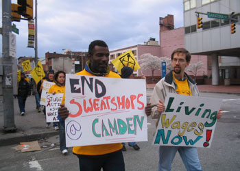

Cleaning Up After the Orioles
Submitted on Wed, 09/05/2007 - 12:02am
This story is on the Nation's website - by Dave Zirin
Finally something newsworthy is happening at Camden Yards in September. No, it's not the Baltimore Orioles limping toward another lackluster finish at their ornate ballpark, famous for selling old-time baseball nostalgia at high-end prices. It's the scrappy members of the United Workers Association, fighting both the resistance of the Maryland Stadium Authority (MSA) and the apathy of Orioles owner Peter Angelos for a living wage.
The UWA, a human rights group founded by homeless day laborers in Baltimore, represents 800 low-wage workers who make up the pool of the 100-120 people who keep Camden Yards clean. Stadium workers--the people who clean out the bathroom stalls, sweep up the small mountains of cigarette butts and make the Camden Yards experience as pristine as promised--make poverty wages, just $7 an hour.
Work schedules for stadium workers can vary as well. Some workweeks can be well over forty hours; in other weeks, if the Orioles are on the road, the laborers don't work at all. Take-home pay varies accordingly, depending on the number of home games in a week and how long the games last. The windfall earned from a game that goes into extra innings can make a real difference in the way a family eats in a given week.
Because they are doing "day labor," members of the UWA who show up to work are sent home if they're not needed. The wages are so low, and the job so "flexible," that some workers live in homeless shelters. One worker was kicked out of public housing because her pay that month couldn't match the monthly rent.
For three years, stadium workers have been demanding to be paid Baltimore's official living wage of $9.62 an hour. They soon could even make a claim to more: On October 1 the state's newly passed living wage law will require state government contractors to pay their employees $11.30 an hour. Both of the city's stadiums--Camden Yards and M&T Bank Stadium, where the NFL's Baltimore Ravens play--were paid for on the public dime.
In this solidly blue state, paying stadium workers a living wage should be common sense, but it is not. The MSA contends that stadium workers are not eligible because they are temporary workers. And what makes them temporary? That they don't have to work "away" games.
The response by UWA members has been to raise public awareness and ask that most basic question to the city of Baltimore: Is this just? They're conducting panel discussions, protests and concerts, and have even threatened a hunger strike. Along the way they have garnered the support of heavyweights like Maryland Governor Martin O'Malley and Baltimore Mayor Sheila Dixon. It's the kind of grassroots labor organizing that doesn't make the nightly news shows. But now the UWA and the stadium workers appear close to reaching a settlement.
On Labor Day, the UWA called off the planned hunger strike after hearing that a meeting of the MSA on Thursday could end with very positive results. Frederick Puddester, chairman of the MSA, even remarked to the Baltimore Sun, "[Living wage is] the policy of the state. Can the Stadium Authority argue that they're exempt on a technicality? Yes, they could. But I don't plan to take that approach."
As Carl Johnson, a former stadium cleaner and striker, told me: "On Friday the governor and the MSA chairman came out publicly in favor of living wages. We considered their public comments to be an indication of a good-faith effort at figuring out how to end poverty wages at Camden Yards. We're postponing the start date [of the hunger strike] to give the MSA some breathing room so that they can turn words into actions.... After three years of organizing and fighting for a living wage, we want to make sure that a living wage is actually won in the end. We'd prefer to call off the hunger strike altogether once a binding living-wage solution is in place, and we're hopeful that the breathing room will help get the MSA to the needed solution."
The progress made on a living wage for day laborers in a hard-edged, damaged metropolis, which locals lovingly call Charm City, could open a new chapter in grassroots labor organizing not seen since the early days of Dr. Martin Luther King Jr.'s Poor People's Campaigns, a model that puts the poor in charge of movements to fight poverty. "The United Workers Association was founded to try and start a 'human rights' model of organizing led by low-wage workers themselves," Greg Rosenthal, a UWA organizer, told me. "It's all about leadership development from the ranks of the poor, a movement to end poverty led by the poor."
Three of the six paid organizers for the UWA come from the ranks of workers. Of the 800 that the UWA represents, according to Rosenthal, as many as 100 are active worker/organizers. Whenever there is a reporter who needs to be talked to, a home visit that needs to be made, a speech that needs to be given, the workers themselves are front and center. Also of note is that the UWA is largely composed of African-American and Latino workers. In an era when communities of color are often pitched against one another, their solidarity inspires hope.
It's interesting that the UWA will win or lose without a lick of help from Orioles owner Peter Angelos. The UWA claims that in 2004 Angelos promised to make up the difference in a living wage out of his own deep pockets. It's a promise he has failed to keep. Angelos loves to tout his credentials as a union-supporting, lifelong Democrat. He made his fortune as an attorney representing trade unions in class-action suits against the ill effects of asbestos. He further burnished his credentials as the "worker boss" when he was the only owner to publicly support the players' union in the 1994 strike.
But since 2004 he's done little for the people scraping the crud off his stadium. The Baltimore Orioles, once one of baseball's proudest franchises, has withered under his watch. What makes Marylanders smile about Angelos these days is the rumor that he is considering selling the team to a group led by Orioles icon Cal Ripken Jr. A victory for the UWA would be a victory for all Baltimore workers--and a nice slap back at Angelos, who apparently won't unload the team soon enough for either the workers of the UWA or the residents of Charm City.